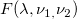
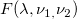
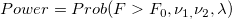
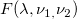
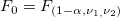
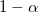
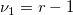
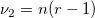
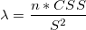

/math-7617376c4ee07c377351181ae25399e6.png "F\,\!") is distributed as the non-central 
is distributed as the non-central Generally, when performing an ANOVA test, we want to know the power of the test with specific sample sizes, or the sample sizes at specified power levels. The PSS ANOVA1 X-Function can be used to calculate the power as well as sample size.
The algorithm for Power calculation.
We assume that each group has equal size. The formula of the Power calculation is given by

where is distributed as the non-central 
, the  quartile of the F-distribution with /math-ae5787f61ff2a77a8838833e09777396.png "\nu _1 \,\!") and
and /math-d098596001dd1926cb1e564b8bdb9507.png "\nu _2 \,\!") degrees of freedom
degrees of freedom
is the degrees of freedom of the numerator
is the degrees of freedom of the denominator
/math-58b7fc3474b021ff11c1a0df58a54060.png "n \,\!") is the number per groupi
is the number per groupi
/math-a01b83d7a33164700942b4b74732fd96.png "r \,\!") is the number of groups
is the number of groups
 is the noncentrality parameter
/math-d8985e55d847e8dbff8396250377df96.png "CSS=\sum _{g=1}^r(\mu _g-\mu )^2")
/math-74b8eddf4b37de80c7c8eed1b64e46fc.png "\mu \,\!") is the overall mean
is the overall mean